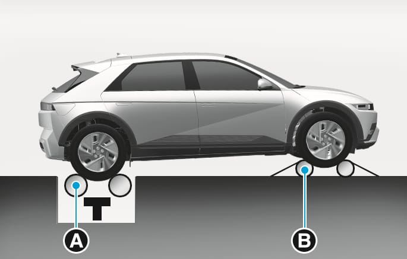

기타 유의 사항
차량 정기 검사 항목 중 '속도계 허용오차 기준 초과 검사'의 경우, 상시 4WD 차량은 4륜구동(4WD)용 롤테스터에서 검사하십시오. 2륜구동(2WD)용 롤 테스터에서 일반 2륜구동(2WD) 차량 검사 방법을 사용할 경우, 4륜구동 부품 손상 및 차량 이탈 사고 위험이 있으니 주의하십시오.

2C_4WDTestCautionLabel
- 롤 테스터
- 간이식 프리 롤 장치
불가피하게 2륜구동용 롤 테스터에서 검사할 경우, 다음 절차를 따르십시오.
-
타이어의 공기압이 규정 공기압인지 확인하십시오.
-
뒷바퀴를 속도계 검사 롤 테스터 위에 올리십시오.
-
파킹 브레이크를 해제하십시오.
-
앞바퀴를 간이식 프리 롤 장치 위에 올리십시오.
-
검사 중 차량 이탈 사고 및 안전사고를 방지하기 위해 차량 앞쪽에서 벗어나 검사를 시행하십시오.